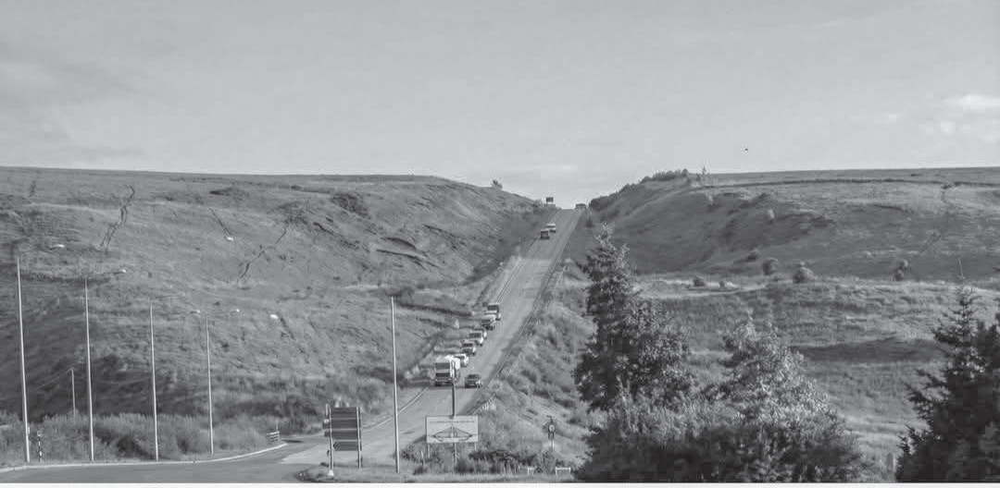
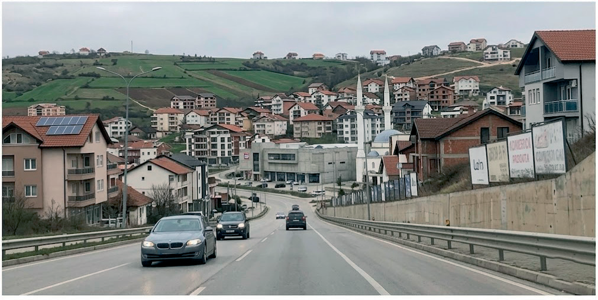

Fshati dikur dhe sot


Në të kaluarën, në fshatra zakonisht njerëzit punonin me bagëti dhe në ara (si punë kryesore). Përdornin vegla të thjeshta për punë dhe shumë fshatra ofronin shërbime bazë ushqimore për zonat përreth. Shtëpitë dikur ishin të thjeshta. Fshatrat karakterizoheshin nga hapësira të gjelbëruara.
Dikur ishte vështirë të udhëtoje në fshat, sepse nuk kishte automjete. Njerëzit udhëtonin kryesisht me qerre me kuaj nëpër rrugë të ngushta.
Në fshatrat e sotme, bujqësia dhe blegtoria janë zhvilluar shumë, meqë tani përdoren mjete më bashkëkohore të punës, të cilat i kanë lehtësuar këto veprimtari. Po ashtu, njerëzit në fshatra nuk varen më nga bujqësia dhe blegtoria, meqë shumica janë të angazhuar në sektorë të ndryshëm. Gjithashtu, fshatrat e sotme kanë ndryshuar edhe në infrastrukturë; ato karakterizohen nga shtëpi me arkitekturë moderne, rrugë të asfaltuara, pak fabrika etj.